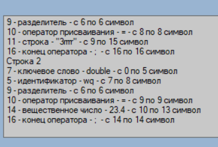

Цель работы: Изучить назначение лексического анализатора. Спроектировать алгоритм и выполнить программную реализацию сканера.
В соответствии с заданным вариантом задания:
Вариант 13 "Переменные в Java":
Идентификатор (letter {letter | digit | “_”});
Ключевые слова: int, double, char, boolean,String, true, false;
ЦБЗ (digit {digit}), вещественное число (digit{digit}[“.”{digit} digit].), символ и строка;
Пробельные символы, оператор присваивания (=), конец оператора (;), конец строки (\n);
Недопустимый символ
Типичные лексемы:: int, double, char, boolean, String, true, false, =, ;, \n.
Интерфейс спроектированного лексического автомата  Тестовые данные и результаты их обработки